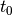

第2课：求解零维能量平衡模式¶
上节课：¶
我们写下全球气候系统的收支
我们根据有效辐射温度
 来写OLR
来写OLR地球的平衡辐射温度约为
这仅取决于来自太阳的能量输出，和行星反照率
我们假定全球能量正比于表面温度
因此我们有一包含两个未知数的单一方程：

OLR对表面温度依赖性的参数化¶
接着，我们将引入气柱辐射传输的额外物理属性以连接和。为此，我们将采用我们所能采用的最简单假设：
其中 为无量纲常数。
这是个参数化，我们引入模式中为了简化。需要一个用于参数，从观测：
为无量纲常数。
这是个参数化，我们引入模式中为了简化。需要一个用于参数，从观测：
因此

采用这个参数化，我们现在可以对表面温度写出闭合方程：
求解能量平衡模式¶
这是个的一阶常微分方程，时间函数。这也是我们的第一个气候模式。
为了求解它（即考察如何从某些特定初始条件变化）我们有两个选择： 1. 解析解 2. 数值解
选择1通常不可能因为方程过于复杂和非线性。这就是为什么计算机在气候模拟的世界里是我们最好的朋友。
但是，如果可能的话，将模式简化为解析解是有用的和有益的。为什么？两个原因： 1. 分析往往会对系统的行为产生更深的理解 2. 为我们测试数值解提供一个基准
线性化控制方程：反馈参数¶
现在采用一阶泰勒展开：
对扰动温度的收支为
这里我们定义
这里 对我们系统实际是反馈参数。在后面课程我们将谈论更多关于这个参数。放进我们的观测值，有。
对我们系统实际是反馈参数。在后面课程我们将谈论更多关于这个参数。放进我们的观测值，有。
这实际上是我们后来称之为普朗克反馈的第一个估计，这个反馈在每个气候模式中都可以找到。一个温暖的表面倾向于通过增加长波辐射到太空而冷却。我们引入负号表明这是一个负反馈，这往往会使系统恢复平衡。再次，我们将在课程的后面回到这个讨论。
求解线性常微分方程¶
现在定义
这是时间维（秒）的正值常数。根据这些定义，温度会变化根据
这是最简单常微分方程之一。希望它看上去像你熟悉的大多数方程。这是一个指数衰减过程的等式。我们可以很容易地从初始条件积分求解温度演变 :
:
我希望这门课的每个人都能直接学习数学。如果没有，请仔细阅读，并确保您了解每一步。
用于松弛全球平均温度的指数递减时间¶
表面温度将在特征时间尺度 范围内向它的平衡值松弛。这是指数递减时间——一个变量衰减到它初值的1/e=0.37所需要的时间。
范围内向它的平衡值松弛。这是指数递减时间——一个变量衰减到它初值的1/e=0.37所需要的时间。
这个时间尺度对于气候系统应是什么？
为估计我们需要一个用于有效热能 的值。快速和粗略估计
的值。快速和粗略估计
这里
是水的比热。
是水的密度，以及
是水加热或冷却的有效深度。
对于正确的选择是什么？这原来是一个有趣而微妙的问题。这很大程度上取决于问题的时间尺度 - 天？ - 年？ - 年代际？ - 千年？
我们在后面课程将回到这个问题。现在，我们仅假定（比海洋中表面混合层的典型深度要深一点）。
那么。对于表面温度的指数递减时间为
这对于我们后面将要讨论到的其他影响行星能量收支的过程而言是相对的快过程。
一些重要信息： - 地球（或任何行星）由于出去的长波辐射的温度依赖性而具有明确的平衡温度。 - 在指数衰减时间尺度上系统倾向向的平衡温度松弛，这个时间尺度取决于（1）辐射反馈过程和（2）有效热容量。 - 在我们的估计中，这个指数衰减时间相对较短。在没有可以增加热容量或者降低（绝对值）反馈参数的其他过程的情况下，地球永远不会远离能量平衡。 - 我们将这个术语进一步量化这个陈述。
在Python中绘制解¶
在这里，我将展示一些使用Python进行简单线图的示例代码。我强烈建议你自己尝试一下。避免复制和粘贴代码的诱惑！你不会学到任何东西。将代码键入到您自己的Python会话中。试用它！
首先，我们将定义一堆常量。
In [6]:
sigma = 5.67e-8 # Stefan-boltzmann constant
Q = 341.3 # global mean incoming solar radiation
alpha = 0.299 # planetary albedo
Tsbar = 288. # global mean temperature
Te = ((1-alpha) * Q / sigma)**(0.25) # emission temperature
print(Te)
beta = Te / Tsbar
lambda0 = -4 * sigma * beta**4 * Tsbar**3
print(lambda0)
C = 4e8
tau = C / (-lambda0)
print(tau)
seconds_per_year = 60*60*24*365
print(tau/seconds_per_year)
254.869467654
-3.32293472222
120375521.471
3.81708274577
此代码使用numpy包进行高效的数组操作。在使用包之前，我们将它导入到当前的Python会话中。
In [10]:
import numpy as np
t = np.linspace(0, 5*tau) # a time array, return evenly spaced number over a specified interval. Default number = 50.
print(t)
type(t) # this shows t is numpy.ndarray type
Tsprime0 = 6. # initial temperature perturbation
# Here we define the actual solution
Tsprime = Tsbar + Tsprime0 * np.exp(-t/tau)
print(Tsprime)
Tsprime.shape
# got the same size array
# the numpy function np.exp() operated simultaneously
# on all elements of the array
[ 0.00000000e+00 1.22832165e+07 2.45664330e+07 3.68496494e+07
4.91328659e+07 6.14160824e+07 7.36992989e+07 8.59825153e+07
9.82657318e+07 1.10548948e+08 1.22832165e+08 1.35115381e+08
1.47398598e+08 1.59681814e+08 1.71965031e+08 1.84248247e+08
1.96531464e+08 2.08814680e+08 2.21097897e+08 2.33381113e+08
2.45664330e+08 2.57947546e+08 2.70230762e+08 2.82513979e+08
2.94797195e+08 3.07080412e+08 3.19363628e+08 3.31646845e+08
3.43930061e+08 3.56213278e+08 3.68496494e+08 3.80779711e+08
3.93062927e+08 4.05346144e+08 4.17629360e+08 4.29912577e+08
4.42195793e+08 4.54479010e+08 4.66762226e+08 4.79045443e+08
4.91328659e+08 5.03611876e+08 5.15895092e+08 5.28178308e+08
5.40461525e+08 5.52744741e+08 5.65027958e+08 5.77311174e+08
5.89594391e+08 6.01877607e+08]
[ 294. 293.41795616 292.89237483 292.41777873 291.98922192
291.60223825 291.25279482 290.93724996 290.65231525 290.3950213
290.16268673 289.95289032 289.76344569 289.59237857 289.43790622
289.29841881 289.1724627 289.05872525 288.95602117 288.86328013
288.77953565 288.703915 288.6356301 288.57396934 288.51829012
288.46801219 288.42261159 288.38161518 288.34459572 288.31116741
288.2809819 288.2537246 288.22911146 288.20688598 288.18681653
288.16869396 288.15232941 288.13755235 288.12420876 288.11215961
288.1012793 288.09145447 288.08258272 288.07457159 288.0673376
288.06080536 288.0549068 288.04958044 288.04477077 288.04042768]
Out[10]:
(50,)
为画一张图，我们将使用matplotlib库。绘图命令与MATLAB很相似。但是，像其他软件包一样，我们需要在使用之前将其导入。
In [3]:
# pyplot is the name of the library of plotting routines within matplotlib
# here we import them and give them a "nickname"
import matplotlib.pyplot as plt
In [4]:
# this command allows the plots to appear inline in this notebook
%matplotlib inline
In [11]:
plt.plot(t, Tsprime)
Out[11]:
[<matplotlib.lines.Line2D at 0x10b58b2d0>]

In [12]:
# use a more convenient unit for time
plt.plot(t / seconds_per_year, Tsprime)
Out[12]:
[<matplotlib.lines.Line2D at 0x10b6a8590>]

In [14]:
# Or add some helpful labels
plt.plot(t / seconds_per_year, Tsprime)
plt.xlabel('Years')
plt.ylabel('Global mean temperature (K)')
plt.title('Relaxation to equilibtrium temperature')
Out[14]:
<matplotlib.text.Text at 0x10b854210>

数值求解常微分方程¶
在这种情况下，方程非常简单，我们有一个解析解。大多数模型在数学上太复杂，我们需要数值求解方法。由于每个模型的控制方程在时间上（通常也在空间上）是不同的，所以我们需要对控制方程使用一些数值近似。

只要时间步足够小这是合理的。
什么是足够小的意思？在实践中，小到数值解决方案表现良好！我们不会在这个课程上花很多时间讨论数值方法，但是我们可以对这个问题有更多的了解。
最简单的时间离散化称为前向欧拉或显式欧拉。假设我们知道系统在时刻的状态，即我们知道温度。然后重新排列上面，
因此如果我们计算在时刻系统的倾向（即时间导数），那么我们有一个公式来预测系统的下一个状态。
对于我们线性零维能量平衡模式，
因此我们可以预测温度
让我们在Python中用一个简单函数实现这个公式来计算每个时间步的下一个温度
In [15]:
def next_temperature(T0, timestep, tau):
Tsbar = 288.
return T0 - timestep/tau * (T0-Tsbar)
现在通过对时间做循环构造完整数值解
In [18]:
Tnumerical = np.zeros_like(t)
print(Tnumerical)
print(Tnumerical.size)
# Assign the initial condition
Tnumerical[0] = Tsprime0 + Tsbar
print(Tnumerical)
# this shows indexing of the time array. t[0] is the first element
# t[1] is the second element
# in Python we always start counting from zero
timestep = t[1] - t[0]
for i in range (Tnumerical.size-1):
# assign the next temperature value to the approprate array elemetn
Tnumerical[i+1] = next_temperature(Tnumerical[i], timestep, tau)
print(Tnumerical)
[ 0. 0. 0. 0. 0. 0. 0. 0. 0. 0. 0. 0. 0. 0. 0. 0. 0. 0.
0. 0. 0. 0. 0. 0. 0. 0. 0. 0. 0. 0. 0. 0. 0. 0. 0. 0.
0. 0. 0. 0. 0. 0. 0. 0. 0. 0. 0. 0. 0. 0.]
50
[ 294. 0. 0. 0. 0. 0. 0. 0. 0. 0. 0. 0.
0. 0. 0. 0. 0. 0. 0. 0. 0. 0. 0. 0.
0. 0. 0. 0. 0. 0. 0. 0. 0. 0. 0. 0.
0. 0. 0. 0. 0. 0. 0. 0. 0. 0. 0. 0.
0. 0.]
[ 294. 293.3877551 292.83798417 292.34431232 291.90101514
291.50295237 291.14550825 290.82453802 290.53631986 290.27751171
290.04511256 289.8364276 289.64903703 289.48076794 289.32966917
289.19398865 289.07215307 288.9627497 288.86450993 288.77629463
288.69708089 288.62595019 288.56207772 288.50472285 288.45322052
288.40697353 288.36544562 288.32815525 288.29467002 288.26460165
288.23760148 288.21335643 288.19158537 288.17203584 288.15448116
288.13871778 288.1245629 288.1118524 288.10043889 288.09019003
288.08098696 288.07272299 288.06530227 288.05863878 288.05265523
288.04728225 288.04245753 288.03812513 288.03423481 288.03074146]
现在我们要把这个和解析解一起画出来。
In [20]:
plt.plot(t / seconds_per_year, Tsprime, label='analytical')
plt.plot(t / seconds_per_year, Tnumerical, label='numerical')
plt.xlabel('Years')
plt.ylabel('Global mean temperature (K)')
plt.ylabel('Relaxation to equilibrium temperature')
plt.legend()
# the legend() function uses the labels assigned in the above plot() command
Out[20]:
<matplotlib.legend.Legend at 0x10ba01690>

所以这个工作很好。这两种解看起来几乎一样.
现在我们已经对数值方法有了一定的信心，我们可以用它来研究一个稍微复杂一点的系统，但是我们没有解析解。
例如，让我们来解决完整的非线性能量平衡模式：
写一个新的求解函数：
In [21]:
# absorbed solar is a constant in this model
ASR = (1-alpha) * Q
# but the longwave depends on temperature... define a function for this
def OLR(Ts):
return sigma * (beta*Ts)**4
# Now we put them together to get our simple solver function
def next_temperature_nonlinear(T0, timestemp):
return T0 + timestep/C * (ASR-OLR(T0))
现在我们将按照上述相同的步骤来求解这个模型，并且将这个解与我们前面两个线性模型的解相一致。
In [22]:
Tnonlinear = np.zeros_like(t)
Tnonlinear[0] = Tsprime0 + Tsbar
for i in range(Tnumerical.size-1):
Tnonlinear[i+1] = next_temperature_nonlinear(Tnonlinear[i], timestep)
plt.plot(t / seconds_per_year, Tsprime, label='analytical')
plt.plot(t / seconds_per_year, Tnumerical, label='numerical')
plt.plot(t / seconds_per_year, Tnonlinear, label='nonliear')
plt.xlabel('Years')
plt.ylabel('Global mean temperature (K)')
plt.ylabel('Relaxation to equilibrium temperature')
plt.legend()
Out[22]:
<matplotlib.legend.Legend at 0x10bb68690>

我们看到模型基本上做同样的事情。
现在尝试一些不同的初始条件
In [23]:
T1 = 400. # very hot
for n in range(50):
T1 = next_temperature_nonlinear(T1, timestep)
print(T1)
288.294151595
In [24]:
T1 = 200. # very cold
for n in range(50):
T1 = next_temperature_nonlinear(T1, timestep)
print(T1)
287.28133982
无论初始条件是什么，系统都回到288K。